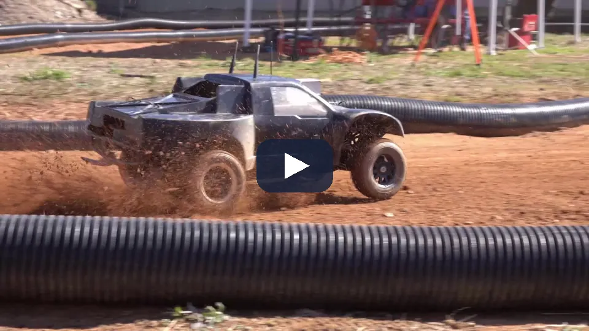
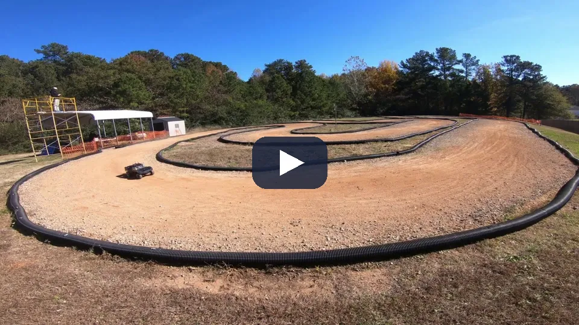
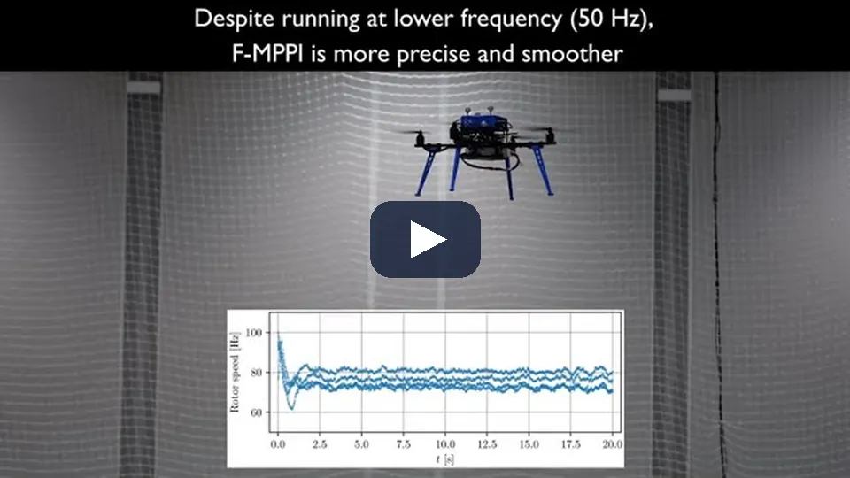
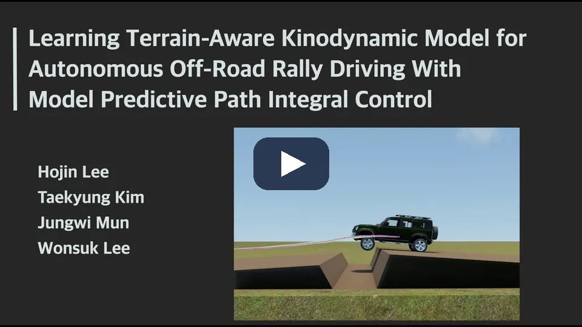
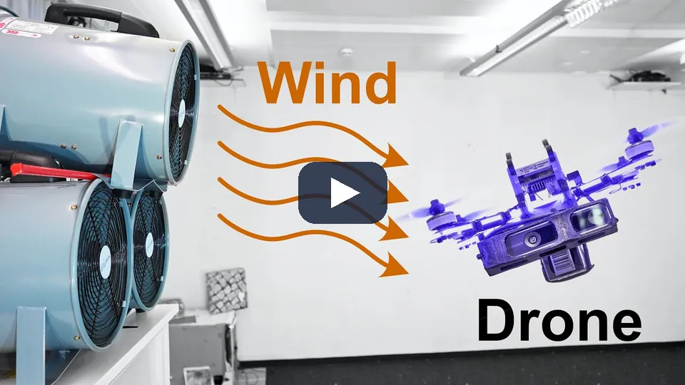
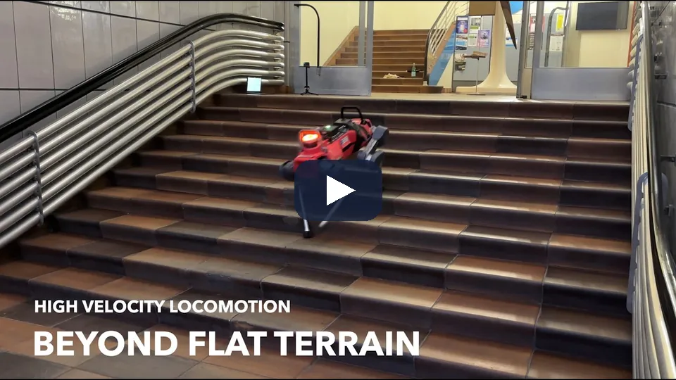
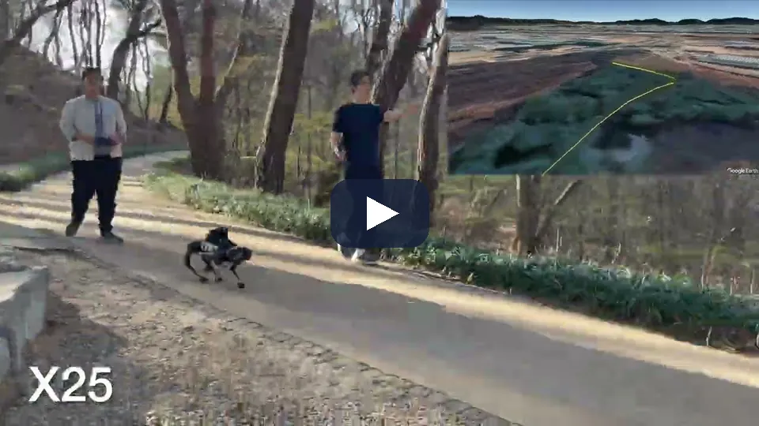
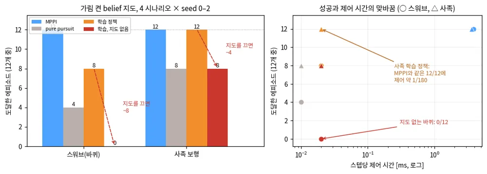

TRAVPLAN · 챕터 발표 · Controller·안전
Planner의 궤적을
안전하게 실행하기
MPPI 계열, 학습 동역학, 안전 필터, 그리고 plant 지연에서 배운 것
§E · §C · §F
2025–2026 연구 비교
TP-0149–0165
순서
여섯 갈래를 지나 travplan이 잰 결과로 끝난다
질문: Planner가 준 궤적을 지형과 보행자 사이에서 어떻게 안전하게 실행하는가
MPPI 계열
가중 평균, 계보, SMPPI, ProxPI, 지연
노이즈와 prior와 지연을 어디에 넣나
학습 동역학·적응
rollout 모델, 잔차, 선형 대 GP
MPPI가 rollout하는 모델을 바꾼다
안전 필터
비용 통합형, CBF, 보정, 샘플 감시
비용에 넣나, 뒤에서 거르나
하위 제어·4족 RL
커리큘럼, DreamWaQ 구현 점검
정책이 아니라 학습 절차를 가져온다
최근 연구 비교
공통점, 차이점, 시도 순서
2025–2026 연구 15편
travplan에서 잰 것
plant 지연, NMPC, 보행자, 멈춤
TP-0128–0165에서 잰 것
travplan: 남의 연구는 "어느 자리에 들어오나"로 읽고, 우리 결과는 TP 번호와 함께 읽는다.
Controller의 일
Controller는 경로를 받아 body twist를 낸다
Planner
경로 또는 시간 인덱스 궤적. 제어는 내지 않는다
→
Controller
추종하면서 지형과 동적 장애물을 로컬로 피한다
→
body twist
\((v_x, v_y, \omega_z)\) 명령
→
스워브 plant
1차 지연 0.2 s, 슬립, 조향 한계
명령과 실제 움직임 사이에 지연이 있다. 이 차이가 뒤의 작업 기록에서 가장 큰 주제가 된다.
비평활 비용을 그대로 다룬다
치명 셀과 이진 충돌을 샘플로 넘는다. Jacobian이 필요 없다. GP 분산은 확률 제약으로 쓴다.
control/mppi/ · mppi, mppi_plant_lag
hard 제약을 형식적으로 건다
acados NMPC가 제약, 튜브, 0차 GP를 품는다. 잔차 GP는 MPPI와 공유한다.
control/acados_mpc/ · mpc, mpc_gp
travplan: 두 갈래는 같은 Controller 프로토콜 구현체이고, 같은 벤치마크에서 비교한다(2026-09-30 결정).
이 챕터를 읽는 틀
새 연구는 세 자리 중 하나로만 들어온다
새 비용 항
CostTerm(ctx → [K])으로 더한다.
예: RiskCost(CVaR), ReferenceCost, 시간가변 보행자 비용
이 챕터: ProxPI, 접촉 최댓값 전파, DUCCT-MPPI
새 rollout 모델
MPPI가 미래를 rollout하는 모델을 바꾼다.
예: SwerveModel, 지연을 넣은 LagSlipSwerveModel, 학습 동역학
이 챕터: CLIS-MPPI, OptCar, FE-RLS, Continual VND
Controller 뒤의 필터
어떤 명령이 나오든 마지막에 최소한으로 고친다.
예: CBF-QP, 예측 안전 필터
이 챕터: CVaR-BF, Poisson 안전 함수, 샘플 안전 필터
최적화기(control/mppi/mppi.py)는 건드리지 않는다. 그래서 이 규칙에 맞는지가 첫 번째 기준이다.
travplan: 지금은 "MPPI + 비용 통합형 안전"이고, 다음 단계는 뒤에 붙는 안전 필터다.
1 · MPPI 계열 · E.1 · B.5 · E.11
샘플을 rollout해
가중 평균한다
최적화기는 그대로 두고 노이즈, prior, 지연 처리를 바꾼 연구들
E.1 · MPPI와 정보이론적 MPC
비용이 낮은 rollout일수록 가중치가 크다
- 노이즈를 섞은 제어 시퀀스 후보를 GPU로 한꺼번에 rollout한다.
- 2017년판은 "비용의 볼츠만 분포에 KL로 가장 가까운 제어 분포"로 유도했다.
- travplan
MPPIController: 샘플 768개, horizon 40스텝(4초), 스텝당 약 10 ms(PyTorch). - 여기에 AR(1) 시간 상관 노이즈와 참조 추종 샘플을 더했다.

[1] MPPI, Georgia Tech, arXiv:1509.01149 (2015) [2] Information-theoretic MPC, arXiv:1707.02342, T-RO 2018
E.1 · 정보이론적 MPC · 시연
정보이론적 MPPI는 1/5 크기 AutoRally로 흙길 트랙을 공격적으로 달렸다

제어 시퀀스에 노이즈를 섞은 후보 수천 개를 GPU로 동시에 rollout하고 비용의 지수 가중치로 평균한다. 2017년판은 교차 엔트로피 방법(CEM)의 MPC 판과 비교했다.
같은 가중 평균이 TravMap 위에서 돈다. 샘플 768개, horizon 40스텝, 스텝당 약 10 ms(PyTorch).
[2] Information-theoretic MPC, arXiv:1707.02342, T-RO 2018 · 영상: GT AutoRally 채널(ICRA 2017판)
E.1 · 계보
십 년 동안 바뀐 것은 샘플 분포와 구현이다
| 연도 | 이름 | 바꾼 것 |
|---|---|---|
| 2015–2018 | MPPI, 정보이론적 MPC | 경로 적분 제어를 GPU 샘플링 MPC로, KL 유도로 일반화 |
| 2018–2021 | Tube-MPPI, Robust MPPI | 명목 상태와 실제 상태를 나누고 추종 제어기를 더한다 |
| 2022 | log-MPPI | 정규 × 로그정규 분포에서 샘플링해 실행 가능한 궤적을 늘린다 |
| 2022 | SMPPI | 노이즈를 제어 변화율에 넣어 매끄럽게 한다(travplan 반영) |
| 2022–2023 | Nav2 MPPI Controller | ROS 2 표준 스택의 CPU MPPI |
| 2024 | MPPI-Generic | C++/CUDA 템플릿. 샘플 128개에 약 0.15 ms(RTX 3080), Orin Nano 약 0.6 ms |
| 2024–2025 | DIAL-MPC | 반복마다 노이즈를 줄이는 diffusion 방식 annealing으로 샘플 분포를 좁힌다(4족 관절 토크) |
| 2025–2026 | Feedback-MPPI, CLIS-MPPI | rollout에서 피드백 이득을 얻어 최적화 주기 사이와 지연을 메운다 |
Robust MPPI: 명목 상태를 고른다
실제 상태가 괜찮으면 거기서 다시 시작하고, 위험하면 명목 상태를 유지한다.
MPPI-Generic: 구현이 속도를 정한다
Nav2 CPU 0.39–0.62 ms, PyTorch 기반 25–48 ms보다 빠르다.
travplan: Orin 이식에서 지연이 문제가 되면 MPPI-Generic 같은 CUDA 구현이 첫 후보다.
RMPPI arXiv:2102.09027 (RA-L 2021) · log-MPPI arXiv:2203.16599 (RA-L 2022) · MPPI-Generic arXiv:2409.07563 (2024)
E.1 · Robust MPPI · 시연
Robust MPPI는 명목 상태를 어디서 다시 시작할지 정해 외란에 버틴다

MPPI는 매 스텝 실제 상태에서 다시 시작한다. 모델이 틀리거나 외란이 크면 샘플 전체가 나쁜 영역으로 밀려 중요도 샘플링이 무너진다. RMPPI는 명목과 실제를 합친 증강 상태와 재시작 규칙을 둔다.
Isaac이나 실물에서 슬립이 커지면 RMPPI식 명목 상태 선택을 다시 검토할 후보다.
RMPPI arXiv:2102.09027 (RA-L 2021, Georgia Tech) · Tube-MPPI (RSS 2018) · 영상: Williams 박사학위 논문(2019)의 RMPPI
B.5 · Smooth MPPI · TP-0016 · TP-0021
노이즈를 변화율에 넣으니 jerk가 28% 줄었다
표준 MPPI는 스텝마다 독립인 노이즈를 제어값에 더하므로 제어가 떨린다. SMPPI는 노이즈를 한 차수 높은 공간에서 샘플링해 적분한다. MPPI 유도는 그대로 지킨다.
![[RAL/IROS 2022] Smooth Model Predictive Path Integral Control without Smoothing](../../assets/yt/fyngK8PCoyM.webp)
| 변형 (4 시나리오 × 3 seed) | 성공 | gt_cost | RMS jerk |
|---|---|---|---|
| AR(1) ρ=0.7 (당시 기본) | 12/12 | 0.024 | 6.7 |
| AR(1) ρ=0.9 | 12/12 | 0.030 | 6.1 |
| 적분 노이즈 (SMPPI) | 12/12 | 0.023 | 4.8 |
12개 에피소드 모두에서 jerk가 줄었다. 도달 시간은 15.5 s에서 14.1 s로 짧아졌다.
| 전체 벤치마크 (TP-0021) | 성공 | RMS jerk | 계획 ms |
|---|---|---|---|
| mppi3d / mppi3d_smooth | 12/12 · 12/12 | 6.7 · 4.8 | 5.1 · 4.8 |
| hybrid / hybrid_smooth | 12/12 · 12/12 | 7.2 · 5.2 | 8.6 · 7.9 |
travplan: 비용 항은 그대로 두고 노이즈 모델만 바꾸면 된다. SmoothMPPIController로 정식 추가했다.
Smooth MPPI, arXiv:2112.09988, RA-L/IROS 2022 · 결과: results/exp_smppi.txt, results/tp0021.log
B.5 · ProxPI
학습 prior는 샘플 평균이 아니라 비용으로 넣는다
- warm start(왼쪽)는 매번 샘플 분포의 중심을 prior로 되돌린다. 그래서 최적화기가 쌓은 보정을 버린다.
- ProxPI(오른쪽)는 이전 해를 중심으로 샘플링하고 prior는 proximal 비용으로만 둔다. 보정이 반복마다 쌓인다.
- prior가 틀려도 traversability 같은 다른 항이 해를 바로잡는다.

travplan: Planner 경로는 ReferenceCost로 받고 샘플의 30%만 경로 근처에서 샘플링한다. 비용 항 단독과 비교할 튜닝 항목이다.
[1] ProxPI, arXiv:2609.00941
E.1 · CLIS-MPPI · Feedback-MPPI
지연은 rollout의 출발점 문제로 바꿀 수 있다
지연을 초기 상태 분포로 두고 rollout마다 시작점을 섭동한다. 가중 rollout의 회귀로 피드백 이득을 얻는다. UR5e 실물 5회에서 MPPI는 2번 충돌, CLIS-MPPI는 0번.
rollout을 자동 미분해 국소 이득을 얻는다. 쿼드로터 실물 x RMSE 0.048 m에서 0.017 m. 이득 계산이 Jetson 실행 시간을 40–70% 늘린다.


travplan: 비용이 치명 셀·이진 충돌이라 gradient가 거의 0이다. 미분 이득보다 회귀 이득을 먼저 쓴다.
[1] CLIS-MPPI, arXiv:2610.21239, CDC 2026 [2] Feedback-MPPI, arXiv:2506.14855, RA-L 2026
E.1 · Feedback-MPPI · 시연
Feedback-MPPI는 rollout을 미분한 국소 이득으로 풀이 사이의 공백을 메운다

Jetson Orin NX 쿼드로터에서 F-MPPI(풀이 50 Hz, 피드백 200 Hz)가 MPPI보다 x RMSE를 0.048 m에서 0.017 m로 줄였다. Aliengo 4족은 MuJoCo 시뮬레이션뿐이다.
비용이 치명 셀·이진 충돌이라 gradient가 거의 0이다. 미분 이득은 두고 가고, 회귀 이득(CLIS)을 먼저 본다(E.16).
[2] Feedback-MPPI, arXiv:2506.14855, RA-L 2026 (Inria·UCL·IIT)
2 · 학습 동역학·적응 · E.2–E.10
MPPI가 rollout하는
모델을 바꾼다
물리 모델 위의 작은 학습 모델, 짧은 이력, 그리고 불확실성
E · 학습 동역학과 추종
이 계열이 바꾸는 것은 rollout 모델이다
travplan은 SwerveModel(평면 운동학)을 rollout한 뒤 terrain_attitude로 자세만 지형에 투영한다. 아래 연구는 그 자리를 학습 모델로 바꿨다.
- 지형 인지 운동 모델(RA-L 2023): 6자유도 운동, 힘 라벨 없이 접촉 추정
- PENN(2022): 미분 가능한 물리 모델 + 신경망
- Bridging(RSS 2023): 확률 앙상블, 학습 때 탐색하고 배포 때 피한다
- latent 문맥 온라인 적응(RA-L 2026)
- TOAST(RA-L/IROS 2022): 같은 신경망으로 고속 추종

travplan: 슬립과 충격이 커져 운동학 모델이 맞지 않을 때 이 자리를 바꾼다.
[1] arXiv:2305.00676 (RA-L 2023) [2] PENN arXiv:2207.07920 [3] Bridging arXiv:2305.12240 (RSS 2023) [4] TOAST arXiv:2201.08321
E · 지형 인지 운동 모델 · 시연
지형 인지 운동 모델은 지형이 차량 운동에 주는 영향을 예측해 위험한 궤적에 페널티를 준다

proprioception과 지형 인식을 조건으로 6자유도 운동을 예측하고, 힘의 정답 없이 접촉 상호작용을 추정한다. MPPI 구조는 그대로다.
SwerveModel을 rollout한 뒤 terrain_attitude로 자세만 지형에 투영한다. 슬립과 충격이 커지면 이 자리를 바꾼다.
[1] Learning Terrain-Aware Kinodynamic Model for Autonomous Off-Road Rally Driving With MPPI Control, arXiv:2305.00676 (RA-L 2023)
E.2 · 마일스톤
네 마일스톤이 이 계열의 바탕이다
| 연도 | 이름 | 핵심 | 보고한 결과 |
|---|---|---|---|
| 2018 | PETS (NeurIPS) | 확률 신경망 앙상블 동역학 + 궤적 샘플링 계획 | half-cheetah에서 SAC보다 8배, PPO보다 125배 적은 샘플로 비슷한 성능 |
| 2021 | IKD (RA-L) | IMU 관측을 넣은 역운동 모델로 고속 오프로드 추종 | 계획 실행 성공률 52.4%에서 86.9% |
| 2021 | RMA (RSS) | 환경 요인을 latent 벡터로, 배포 때는 이력에서 추정 | 적응 모듈 10 Hz, 정책 100 Hz. 1초 안쪽으로 새 지형에 적응 |
| 2023 | TD-MPC2 (ICLR 2024) | 디코더 없는 latent world model 안에서 MPPI로 계획 | 104개 과제, 한 에이전트가 80개 과제 수행 |
불확실성을 낸다
PETS의 분산은 데이터 잡음을, 앙상블 불일치는 데이터가 부족한 곳을 나타낸다.
이력이 숨은 조건을 전달한다
RMA의 "이력에서 latent 추정"이 2026년 OptCar와 Continual VND의 뼈대다.

PETS arXiv:1805.12114 · IKD arXiv:2102.12667 · RMA arXiv:2107.04034 · TD-MPC2 arXiv:2310.16828
E.2 · RMA · 시연
RMA는 privileged 정보로 배운 latent를 이력에서 추정해 1초 안쪽에 적응한다

적응 모듈은 최근 상태·행동 이력만으로 latent(extrinsics)를 추정하고 10 Hz로 돈다. 기본 정책은 100 Hz다. 시뮬레이션에서는 마찰·하중·모터 세기를 알므로 privileged 정보로 먼저 배운다.
이 "이력에서 latent 추정"이 2026년 OptCar와 Continual VND의 뼈대다. 노면·하중 조건의 자리는 아직 없다(E.16).
RMA arXiv:2107.04034 (RSS 2021, UC Berkeley·CMU)
E.3 · E.4 · 잔차와 문맥
물리 모델 위에 작은 학습 잔차를 얹는다
강체 물리 + TCN 잔차를 VIO에 넣는다. 힘 라벨 없이 학습한다. 힘 예측 오차 0.982 N에서 0.491 N, Jetson TX2에서 약 180 Hz.
최근 0.4초 이력의 12차원 latent로 잔차를 조건화하고 replay 버퍼로 기억한다. 반복되는 바람에서 회복이 약 5배 빠르다.
범용 모델을 한 차량에 특화하고 약 5초 이력을 문맥 토큰 하나로. 6 m/s 추종 오차가 AnyCar 대비 42–57% 작다.

travplan: 보정한 물리 모델은 이미 있다(robot/plant.py). 학습 모델은 Isaac이나 실물에서 그 식이 틀릴 때 필요하다.
[1] HDVIO2.0 arXiv:2504.00969 [2] Continual VND arXiv:2606.27353 [3] OptCar arXiv:2607.13319
E.3 · HDVIO2.0 · 시연
HDVIO2.0은 물리 모델 + TCN 잔차로 바람 같은 외란을 상태 추정의 부산물로 낸다

병진은 점질량, 회전은 강체인 물리 모델이 대부분을 설명하고, TCN 두 개가 잔차 추력·토크만 맡는다. 입력은 명령과 자이로의 최근 100 ms다. 외력은 자세·속도·IMU bias와 함께 슬라이딩 윈도 최적화에서 같이 푼다.
HDVIO2.0은 지금 받는 외란을 상태로 추정해 읽고, Continual VND는 겪어 본 조건을 기억해 미리 대비한다(E.4).
[1] HDVIO2.0 arXiv:2504.00969 (T-RO 2025, UZH RPG)
E.4 · E.9 · FE-RLS · wBLR
바퀴 로봇 잔차의 큰 몫은 선형인 지연이다
900 kg 지상 로봇 3 km 실측에서 가중 베이즈 선형회귀(wBLR)가 GPR보다 평균도 불확실성도 정확했다.
\(dv_x\)·\(dv_y\)에서 선형모형이 GP와 같았다(R² 0.71/0.95). GP가 이긴 곳은 \(d\omega\) 하나다.
Neural ODE 기저의 계수만 RLS로 갱신한다. 시뮬레이션 얼음 지형에서 약 5초 만에 적응했다.

travplan: 잔차는 기저 몇 개 + RLS로 둔다. GP는 비선형이 남는 채널과 분산이 필요한 곳에만 쓴다.
[1] Learn Fast, Forget Slow, arXiv:1810.06681 [2] Zero to Autonomy in Real-Time (FE-RLS), arXiv:2509.12516
E.10 · GP가 앉는 자리
GP 분산은 MPPI에서도 확률 제약으로 쓴다
| 자리 | 회귀하는 것 | travplan |
|---|---|---|
| ① 동역학 잔차 | (상태, 입력) → 실현 오차 | TP-0068 |
| ② 지형 → 슬립 | 지형 기하 → 슬립비, 통과 비용 | TravNet 자리, TP-0033 |
| ③ 지도 자체 | 관측 점 → 고도 + 불확실성 | TravMap ELEV·SIGMA |
지금 TravNet은 σ를 내지 않는다
② 자리에 GP를 두면 SIGMA가 학습된 값으로 채워지고, 제약을 조일 재료가 된다(TP-0069).
hard 제약·튜브·0차 GP. GP 평균으로 plant 37/48에서 44/48(M.3.10–M.3.12).
비평활 비용을 그대로. 0선 정밀화(TP-0119) 뒤 plant 89/96, 기준 88/96과 차이가 유의하지 않다.
travplan: 둘을 같은 벤치마크에서 비교한다. 잔차 GP는 두 갈래가 공유하므로 두 번 만들지 않는다.
Data-Driven Sampling Based Stochastic MPC (ICRA 2025), arXiv:2411.03289 — GP 잔차 위의 확률 제약을 MPPI로 풀었다
E.5 · 강연 · 배운 모델 위의 보장
배운 모델 위에서 보장을 만드는 길은 세 갈래이고, travplan은 첫째만 건드렸다

기록한 데이터로 예측 모델을 자동 개선한다. E.2–E.4(IKD·PETS·RMA, HDVIO2.0, latent 조건)가 여기다.
폐루프 성능이 가장 좋은 비용·제약을 추론한다. travplan이 아직 손대지 않은 축이다.
MPC로 학습 제어기에 제약 만족을 덧붙인다. C.4 예측 안전 필터와 PCBF의 회복 장치가 여기다.
Hewing·Wabersich·Menner·Zeilinger, Annual Review of Control, Robotics, and Autonomous Systems 3:269–296 (2020) · Cautious MPC arXiv:1705.10702 · PCBF arXiv:2105.10241
3 · 안전 필터 · C.1–C.4
보행자와 치명 셀 앞에서
명령을 지킨다
비용에 넣을 것인가, 뒤에서 거를 것인가, 그리고 불확실성은 맞는가
C.1 · C.2 · 두 구조
travplan은 비용 통합형으로 시작했다
예측한 장애물 위치 주변에 시간가변 비용을 얹는다. ControlRequest.dynamic_obstacles가 RiskCost로 들어간다. 횡단 보행자 충돌 1/3에서 0/3(TP-0012).
어떤 명령이든 QP 필터가 최소한으로 고친다. 표준 CBF-QP, OcclusionCBF, CVaR-BF가 여기 든다.


travplan: 다음 단계는 Controller 뒤에 붙는 CVaR-BF 안전 필터다(TP-0014).
그림 출처: OcclusionCBF 공개 저장소 데모. 참조 구현이 상용 Gurobi를 요구해 보류했다.
C.3 · 비교
라이선스와 지연이 후보를 가른다
| 방식 | 스텝당 지연 | 안전 보장 | 솔버·의존성 | travplan |
|---|---|---|---|---|
| 시간가변 비용 레이어 | 거의 0 | 없음(휴리스틱) | 없음 | 채택·구현 완료 |
| RA-MPPI / DRA-MPPI | 97–115 ms (RTX 2080) | 확률적 | MPPI 샘플러 확장 | 확률 제약 갈래에서 참고 |
| DUCCT-MPPI (2026) | 미보고 | 확률적 + 보정 평가 | MPPI 샘플러 확장 | 보정 지표의 본보기 |
| 표준 CBF-QP | 0.6–0.8 ms | 강함(barrier 불변) | 소형 QP | 중간(새 QP 계층) |
| OcclusionCBF | 1.6–4.5 ms | 강함 + 가림 인증 | Gurobi(상용) | 보류 |
| CVaR-BF (Adaptive) | 미보고 | 확률적(CVaR) | CasADi(오픈소스) | 가장 유력(TP-0014) |
| OA-MPC / OACP / Control-Tree | 48–200 ms | 강함(최악 경우) | MPC 솔버 | Orin 예산 밖 |
지금: 시간가변 비용 레이어
TravMap 조회뿐이라 지연이 거의 없다. 보장은 없지만 동적 장애물 회피의 출발점으로는 충분했다.
다음: Controller 뒤의 CVaR-BF
위험 수준을 상황에 맞게 스스로 조절하는 barrier 함수. 오픈소스로 풀린다.
travplan: CVaR-BF는 의존성이 casadi·numpy·scipy뿐이고, RiskCost의 CVaR와 개념이 가장 가깝다.
DRA-MPPI arXiv:2506.21205 (IROS 2025) · RA-MPPI arXiv:2209.12842 · Risk Adaptive CVaR Barrier Functions (IROS 2025)
C.3 · CVaR-BF · 시연
CVaR-BF는 위험 수준을 스스로 조절하며 보행자 사이를 지난다
![[IROS 2025] Safe Navigation in Uncertain Crowded Scenarios Using Risk Adaptive CVaR Barrier Functions](../../assets/yt/VHRnmXToLN8.webp)
CVaR와 동적 영역 기반 barrier 함수를 결합해 위험 수준을 상황에 맞게 스스로 조절한다. 오픈소스 CasADi(qpOASES·IPOPT)로 풀고, 공식 구현의 의존성은 casadi·numpy·scipy뿐이다.
RiskCost가 이미 CVaR를 쓰므로 개념이 가장 가깝다. TP-0014의 1순위 후보로 Controller 뒤에 붙인다.
Risk Adaptive CVaR Barrier Functions (IROS 2025) · 공개 구현 Adaptive-CVaR-Barrier-Function
C.2 · E.10 · 위험 보정
불확실성이 틀리면 확률 제약도 틀린다
보행자 9명에서 성공률 Nav2 MPPI 47.83%, DRA-MPPI 50.38%, DUCCT-MPPI 77.97%.
두 모듈을 과소신으로 두면 67.33%로 떨어진다. 위험이 넓게 퍼져 페널티가 작아지는 확률 희석이다.
바퀴 접촉 높이 최댓값의 모멘트를 닫힌 형태로 전파한다. CVaR 오차 중앙값이 선형화보다 2.7–3.4배 작다.
그런데 지도의 ±1σ 안에 드는 점은 20–21%였다(명목 68%).

travplan: SIGMA로 제약을 조이기 전에 L1 매퍼의 σ가 실제 고도 오차를 얼마나 덮는지부터 잰다.
[1] DUCCT-MPPI, arXiv:2605.28330 [2] 접촉 최댓값 전파, arXiv:2610.06103
C.4 · Poisson 안전 함수 · Exact-Safe MPPI
치명 셀마다 barrier를 두면 좁은 틈이 닫힌다
occupancy 지도의 장애물 경계를 \(h = 0\)으로 두고 Poisson 방정식을 풀어 CBF를 만든다. 120 × 120 격자를 GPU에서 0.2–0.3 ms에 푼다. Go2·G1 실물.
TravMap의 치명 셀을 Dirichlet 경계로 두면 격자 하나로 CBF 안전 필터를 만든다. 위험도별 유출량으로 cost도 넣을 수 있다.
soft-min은 실제 최솟값보다 작아 안전한 상태까지 뺀다. 틈 지표가 ln 2보다 작으면 soft-min 실행 1,050번 중 통과 0번이었다.
정확한 최솟값과 δ-활성 집합의 QP는 4,950번 위반 0. 대신 샘플마다 QP를 푼다.
soft-min은 늘 실제 최솟값 이하라, barrier가 많을수록 안전 집합이 더 깎인다.
TravMap 치명 셀
cost ≥ 0.95인 셀
→
Dirichlet 경계
경계에서 h = 0
→
Poisson h
격자 하나를 GPU로 푼다
→
CBF-QP 필터
MPPI 명령을 최소한으로 고친다
travplan: CBF는 격자 전체를 Poisson \(h\) 하나로 풀어 Controller 뒤에 붙인다. MPPI 안의 샘플별 QP는 예산 밖이다.
[1] Poisson 안전 함수, arXiv:2505.06794 [2] Exact-Safe MPPI, arXiv:2610.07369 [3] GS-MPPI, arXiv:2410.02154
C.4 · Poisson 안전 함수 · 시연
occupancy 지도에서 Poisson 방정식으로 푼 \(h\) 하나가 Go2·G1의 CBF 필터가 된다

장애물 경계를 \(h = 0\)인 Dirichlet 경계로 두고 Poisson 방정식을 푼다. \(h\)는 자유 공간에서 양수, 경계에서 멀수록 크고, 기울기가 경계 근처에서도 0이 되지 않는다. GPU SOR로 120 × 120 격자를 0.2–0.3 ms에 풀고 10 Hz로 갱신한다.
TravMap의 치명 셀을 Dirichlet 경계로 두면 격자 하나로 CBF 안전 필터를 만든다. G1의 속도 추종 지연은 스워브 조향 지연에도 같은 주의를 준다.
[1] Poisson 안전 함수, Bahati·Bena·Ames (Caltech), arXiv:2505.06794 (2025)
C.4 · 샘플 안전 필터
안전한 샘플이 하나도 없을 때만 개입한다
- 명목 명령을 한 스텝 적용했다고 가정하고, 그 뒤의 제어 시퀀스를 Stein 변분 MPC로 샘플링한다.
- 안전 = horizon 동안 위반 없음 + 종단 상태가 정지 가능한 불변 집합 안.
- 안전한 샘플이 없으면 저장해 둔 백업 제어 시퀀스의 첫 입력을 쓴다.
- 시나리오 기법으로 불필요하게 개입할 확률에 상한을 건다.
교차로 차량 3·4·5대: 필터 없이 100건 중 4·12·15건 충돌, 필터를 켜면 0건(개입률 0.08·0.21·0.38).

travplan: 768 rollout에 제동 구간을 붙여 같은 감시기를 만든다. 백업은 직전 주기의 안전한 정지 시퀀스다.
[1] 샘플 안전 필터, KAIST, arXiv:2604.22149 (2026, 시뮬레이션)
4 · 하위 제어 · 4족 RL · F.1–F.8
관절 RL이 아니라
학습 절차를 가져온다
커리큘럼, privileged 정보 distillation, 지도를 믿을지 정하는 신뢰도 게이트
F.2 · F.3 · LP-ACRL
학습 진척으로 고르면 난이도 순서가 필요 없다
- 과제 600개에서 1,500 iteration에 성공률 80%. 기준선은 3,000 이후에도 고전했다.
- ANYmal D 실물: 평지 3.0 m/s, 험지 2.5 m/s.
- 관측에 지형 높이 격자가 들어간다. TravMap과 같은 구조다.
- travplan은 지금 지형 레벨을 균등 샘플링한다(TP-0039).

travplan: 성공·실패는 이산이라 진척 신호로 나쁘다. GT cost나 진행 거리 같은 연속 지표로 잰다.
[1] Li·Li·Hutter, Scaling Rough Terrain Locomotion with Automatic Curriculum RL, arXiv:2601.17428
F.2 · LP-ACRL · 시연
LP-ACRL로 학습한 ANYmal D가 평지 3.0 m/s, 험지 2.5 m/s로 달린다

실물 ANYmal D는 평지 3.0 m/s, 계단·경사·자갈 같은 험지 2.5 m/s, 각속도 3.0 rad/s까지 나왔다. 실물에서는 elevation mapping 잡음 때문에 privileged teacher에서 LSTM student로 distillation했다.
지형 레벨을 균등 샘플링하는 지금(TP-0039)과 달리, GT cost나 진행 거리 같은 연속 지표로 진척을 재는 커리큘럼의 본보기다.
[1] Li·Li·Hutter, Scaling Rough Terrain Locomotion with Automatic Curriculum RL, arXiv:2601.17428
F.6.1 · E.15 · TP-0155
공개 DreamWaQ 구현에서 작동하는 문맥 z는 없었다
- 비공식 구현 넷을 코드까지 읽고 CPU에서 돌렸다. 학습은 하지 않았다.
- M20 바퀴-다리 정책은 MuJoCo에서 20 cm 계단 10단을 오르내린다.
- z를 0이나 큰 노이즈로 바꿔도 결과가 같다. z 입력 열의 노름은 관측 열의 약 1/200이다.
- Walk These Ways Go2 정책은 넘어지지 않는다.
- 다만 속도 추종이 관절 수동 감쇠 하나에 따라 약 40%와 약 100% 사이를 오간다.
- 2차원 '마찰' 추정은 gait에 따라 순위까지 뒤집혀 물리량이 아니다.

travplan: 가져올 것은 DreamWaQ++의 신뢰도 필터, 곧 SIGMA를 믿을지 정하는 게이트다(TP-0055).
F.6.1 · DreamWaQ · 시연
DreamWaQ는 exteroception 없이 proprioception만으로 지형을 암묵적으로 추정해 걷는다

CENet이 관절 이력에서 지형·동역학 문맥을 latent로 뽑고, 정책은 그 latent를 조건으로 받는다. RMA와 같은 뼈대인데 대상이 환경 파라미터가 아니라 지형이다. ICRA 2023 자율 사족보행 대회 1위, 고도차 22 m 실외 주행.
공개 비공식 구현 넷에서는 작동하는 문맥 z가 없었다(앞 장, TP-0155). 가져올 것은 정책이 아니라 DreamWaQ++의 신뢰도 필터다.
DreamWaQ arXiv:2301.10602 (ICRA 2023, KAIST Urban Robotics Lab, Nahrendra·Yu·Myung) · DreamWaQ++ arXiv:2409.19709
5 · 최근 연구 비교 · E.16
최적화기보다
rollout이 믿는 것을 고쳤다
시작 상태, 동역학, 불확실성을 실제와 맞춘 2025–2026 연구 15편
E.16 · 비교표 ① MPPI와 확률 제약
MPPI 쪽은 시작점, prior, 위험을 고쳤다
| 이름 (연·발표) | 자리 | 방법의 핵심 | 로봇·실험 |
|---|---|---|---|
| CLIS-MPPI (CDC 2026) | MPPI 샘플링 | 초기 상태 샘플, rollout 회귀 이득 | UR5e 팔 실물, 5회 |
| Feedback-MPPI (RA-L 2026) | MPPI 피드백 | rollout 미분으로 국소 이득 | 쿼드로터 실물, 4족 시뮬 |
| ProxPI (2026) | MPPI prior | prior를 proximal 비용으로 | 실물·시뮬 5로봇 |
| OT-MPC (2026) | MPPI 최적화기 | 가중 평균 대신 엔트로피 최적 수송 | 시뮬뿐 |
| DRA-MPPI (IROS 2025) | 확률 제약 | 몬테카를로 결합 충돌 확률 | Jackal + 보행자 실물 |
| DUCCT-MPPI (IROS 2026 투고) | 확률 제약, 보정 | UT 튜브, Brier 점수·로그 손실 | TurtleBot3 시뮬 |
| Data-Driven Sampling SMPC (ICRA 2025) | 확률 제약 | GP 잔차 위의 확률 제약을 MPPI로 | 스키드 스티어 실물 |
| 접촉 최댓값 전파 (ICRA 2027 투고) | 위험 비용 | Clark 모멘트, 가우시안 CVaR | 로버 고도 데이터 오프라인 |
travplan: 가중 평균 단계 자체를 바꾼 것은 OT-MPC 하나다. 나머지는 시작점, prior, 위험을 바꿨다.
E.16 · 비교표 ② 동역학과 안전 필터
동역학은 짧은 이력으로, 안전은 샘플로 판정한다
| 이름 (연·발표) | 자리 | 방법의 핵심 | 로봇·실험 |
|---|---|---|---|
| HDVIO2.0 (T-RO 2025) | 학습 동역학(추정) | 물리 + TCN 잔차를 VIO에 | 쿼드로터 실물 |
| Continual VND (2026) | 학습 동역학 | 0.4 s 이력의 latent, replay 버퍼 | 쿼드로터 실물 |
| OptCar (CoRL 2026) | 학습 동역학 | 약 5 s 이력의 문맥 토큰 | 1/5 오프로드 차량, 6 m/s |
| FE-RLS (RA-L 투고) | 온라인 적응 | 기저 계수를 RLS로 | Jackal 실물, 잔디·얼음 |
| Poisson 안전 함수 (2025) | 외부 안전 필터 | Poisson 방정식으로 만든 CBF-QP | Go2·G1 실물 |
| 샘플 안전 필터 (2026) | 외부 안전 필터 | 안전한 샘플이 없을 때만 백업 | 시뮬뿐 |
| Exact-Safe MPPI (ACC 2027 투고) | MPPI 안의 안전 | 정확한 최솟값, δ-활성 CBF-QP | 이중 적분기 시뮬 |
travplan: 바퀴 지상 로봇 실물은 OptCar, FE-RLS, DRA-MPPI, Data-Driven Sampling SMPC 넷뿐이다.
E.16 · 공통점
rollout을 고치고, 확률은 샘플로 잰다
최적화기는 두고 rollout을 고친다
CLIS는 시작 상태, OptCar·FE-RLS·VND는 동역학, 접촉 최댓값은 비용을 바꾼다. 예외는 OT-MPC다.
travplan: LagSlipSwerveModel(TP-0150)
물리 모델 위에 작은 학습 모델
강체 물리에 잔차를 더하거나 기저 3–8개의 계수만 바꾼다. 큰 블랙박스를 처음부터 배우지 않는다.
travplan: robot/plant.py + 잔차 GP(TP-0068)
짧은 이력이 숨은 조건을 전달한다
OptCar 약 5초, VND 0.4초. 배포 중에 신경망 가중치는 바꾸지 않는다.
travplan: 노면·하중 조건의 자리, 아직 없음
샘플이 곧 안전 판정이다
DRA·DUCCT는 몬테카를로로, 샘플 안전 필터는 "안전한 샘플이 하나라도 있나"로 판정한다.
travplan: 768 rollout을 감시기로(샘플 백업 감시 후보)
travplan: "mppi.py는 건드리지 않는다"는 규칙과 같은 방향이다. rollout이 plant 지연을 알게 하자 치명이 줄었다(TP-0150).
E.16 · 차이점
갈리는 축은 다섯이다
| 축 | 갈래 | 대가 |
|---|---|---|
| 지연을 어디에 | 동역학 안(mppi_plant_lag, VND) · 시작 상태 분포(CLIS) · 실행 뒤 피드백(F-MPPI) | 흔들리는 지연은 동역학 쪽이 못 잡고, 분포 쪽은 보수적이 된다 |
| 무엇으로 적응 | 문맥 전방 추론(OptCar, VND) · 계수 RLS(FE-RLS) · GP 잔차 | 큰 사전학습 · 기저 밖 현상 · 확장성 |
| 불확실성 | 믿고 전파(DRA, SMPC, 접촉 최댓값) · 재고 보정(DUCCT) | σ가 틀리면 정확한 전파도 이득이 없다 |
| 안전을 어디서 | 비용 페널티 · 외부 필터(Poisson, 샘플) · MPPI 안 CBF(GS, Exact-Safe) | 보장 없음 · 모델 범위 안 보장 · 틈 닫힘 또는 샘플별 QP |
| 실물 검증 | 바퀴 실물 넷 · 팔·쿼드로터 · 시뮬뿐 넷 | 시뮬뿐: DUCCT, 샘플 필터, Exact-Safe, OT-MPC |
지연의 고전 기준선은 상태 예측기다
이미 보냈지만 아직 바퀴에 닿지 않은 명령으로 계획 시작 상태를 명령이 적용될 시각까지 전방 시뮬레이션한 뒤 거기서 최적화한다. Controller는 자기 명령 기록을 알므로 이 부분은 결정적이다.
travplan: 지금 시뮬의 지연은 에피소드 안에서 일정한 이산값이다. 그래서 동역학 또는 시작 상태를 결정적으로 예측하는 쪽이 맞다.
E.16 · travplan에 주는 의미
셋을 가져오고 셋은 두고 간다
기준은 하나다. 지금 열린 병목에 닿고, mppi.py를 고치지 않으며, PyTorch MPPI 예산 안에 드는가.
- 지연을 시작 상태로. 아는 명령 기록은 결정적으로 전방 시뮬레이션하고, 모르는 지연 스텝 수만 rollout마다 이산값으로 샘플링한다.
- 위험 보정.
RiskCost의 확률 출력부터 정의하고 근접 사건(near miss)까지 센다. - 샘플 백업 감시. 정지 가능한 안전한 샘플이 없을 때만 저장해 둔 정지 시퀀스로 바꾼다.
- 미분 이득(Feedback-MPPI). 비용 gradient가 거의 0이고 MPPI는 매 주기 다시 푼다.
- MPPI 안의 CBF. 샘플별 QP는 예산 밖이고, soft-min은 틈을 닫는다.
- OptCar식 대규모 사전학습. plant 식이 정확한 벤치마크에서는 필요 없다.
travplan: 두고 갈 것은 버리는 것이 아니다. OptCar식 사전학습은 Isaac이나 실물 로그가 생기면 다시 본다.
E.16 · 시도 순서 (TP 후보)
지연 실패의 원인부터 가려낸다
TP-0032 스모크(레벨 0, 한 판): 끔 12/12, 지연 9/12, 드리프트 10/12. 짝 비교 전이라 판정이 아니다.
| 순서 | 할 일 | 판정 |
|---|---|---|
| 1 | --latency 0 0 3(제어 지연만) 스모크 한 판. 2 2 3의 치명 3/12가 제어 지연에서 오는지 확인한다 | PR #234 병합 뒤 main에서 |
| 2 | 지연을 아는 MPPI(TP-0170): 상태 예측기 변형과, 지연 스텝 수를 0–3에서 샘플링하는 혼합 변형 | 2층 짝 비교, 치명 수 |
| 3 | 위험 보정 지표: 실행 스텝의 확률 출력을 정의하고 TP-0154 에피소드로 신뢰도 도표 | 레벨 0 도달 116에서 107/120이 과소신 멈춤인가 |
| 4 | 샘플 백업 감시: 제동 구간, 정지 가능한 안전한 샘플 수를 기록 | plant 레벨 3 짝 비교. 시간 초과가 늘지 않아야 |
| 5 | 접촉 최댓값 σ 전파: 바퀴 접촉 높이의 pitch CVaR CostTerm | 그 전에 L1 SIGMA의 coverage부터 |
travplan: 판정은 짝 비교로 한다. 치명 실패가 하나라도 늘면 기본값으로 채택하지 않는다.
6 · travplan 작업 기록
rollout이 plant를 알게 하자
치명이 줄었다
plant 지연, NMPC 비교, 보행자, 멈춤 진단, 학습 정책 — 잰 것만 적는다
TP-0149 · TP-0150 · plant를 아는 MPPI
rollout에 plant 지연을 넣자 치명이 55에서 4로


mppi_plant_lag 239/360(치명 4). 레벨 0은 116/120(치명 0), 짝 41 : 23권장 L1 + 스워브 plant, 레벨 3, seed 0–9 × 오프셋 3 · control/mppi/plant_aware.py · MPC 문서 M.3.22
TP-0152 · NMPC 갈래
같은 plant 조건에서 NMPC 갈래는 치명이 여덟 배다

travplan: mpc 222/360(치명 34), mpc_gp 215/360(치명 32), mppi_plant_lag 239/360(치명 4). 짝 34 : 17(p = 0.024), 34 : 10(p = 0.0004).
TP-0154 · TP-0160 · TP-0161 · TP-0162
보행자 5명에서 충돌은 720 중 8건이었다

mppi_plant_lag). 레벨 0 도달이 116에서 107/120으로 줄고, 레벨 3은 그대로다8건 모두 직전에 MPPI 샘플 전부가 보행자 hard 페널티에 걸렸다. 페널티가 상수가 되면 참조를 따라 전진한다.
mppi_plant_lag_pg: 충돌 8에서 4, 치명 10 그대로. 짝 0 : 3, p = 0.25.
bumps 레벨 0 seed 1의 정면 보행자. plant 조향 한계 56.2° 때문에 횡이동을 못 한다.
TP-0130 · E.11 · MPPI 멈춤 진단
멈춤은 최적화기를 바꿔도 풀리지 않았다

MPOT식(O2)이 '센' 장면은 둘이고, 그 둘에서 같은 예산 MPPI(B)도 셌다. 그래서 MPOT 변형은 만들지 않는다.
치명 직전 계획은 모델에서는 안전하지만 plant 개루프 재생에서 83–91%가 실패한다. 정지 명령은 29%만 실패한다.
TP-0128 · TP-0129 · TP-0135 · Playground
지도와 rollout이 꼭 필요한 쪽은 기동력이 낮은 바퀴다

사족 12/12로 MPPI와 같고 바퀴는 8/12. 제어 시간 0.02 ms 대 MPPI 3.6–4.8 ms(브라우저).
바퀴 0/12, 사족 8/12. 15 cm 연석이 바퀴에게는 치명이고 사족에게는 지나갈 땅이다.
하체 지연을 모르는 MPPI는 6/10, rollout에 지연을 넣으면 10/10.
정리 · 다음 할 일
다음 할 일은 지연과 보정이다
Controller의 문제는 최적화기가 아니라 rollout이 믿는 세계였다. 남의 최근 연구도 우리 측정도 같은 방향이었다.
- rollout이 plant 지연을 알아야 한다. 치명 55에서 4(TP-0150).
- plant 조건에서 NMPC 갈래는 아직 뒤진다(TP-0152).
- 멈춤은 최적화기 탓이 아니었다(TP-0130).
- σ와 확률 제약은 보정이 맞을 때만 안전하다(C.2, E.10).
- 지연 실패의 출처와 지연을 아는 MPPI(TP-0169, TP-0170).
- plant 레벨 3 시간 초과(TP-0151). 경사로를 뺀 성적도 적는다.
- 등급화 페널티 배포 결정과 실제 조향 한계 확인(TP-0161, TP-0163).
- Controller 뒤의 안전 필터: CVaR-BF, Poisson \(h\)(TP-0014).
travplan: 치명 실패가 하나라도 늘면 기본값으로 채택하지 않는다. 안전은 통계로 깎지 않는다.
참고문헌
모든 수치는 리서치 문서와 STATE.md에서 왔다
MPPI arXiv:1509.01149 · 정보이론적 MPC arXiv:1707.02342 (T-RO 2018)
Robust MPPI arXiv:2102.09027 · log-MPPI arXiv:2203.16599 · MPPI-Generic arXiv:2409.07563
Smooth MPPI arXiv:2112.09988 · ProxPI arXiv:2609.00941
CLIS-MPPI arXiv:2610.21239 · Feedback-MPPI arXiv:2506.14855 · OT-MPC arXiv:2605.02147 · MPOT arXiv:2309.15970
지형 인지 운동 모델 arXiv:2305.00676 · PETS arXiv:1805.12114 · IKD arXiv:2102.12667 · RMA arXiv:2107.04034 · TD-MPC2 arXiv:2310.16828
HDVIO2.0 arXiv:2504.00969 · Continual VND arXiv:2606.27353 · OptCar arXiv:2607.13319 · FE-RLS arXiv:2509.12516
Learn Fast, Forget Slow arXiv:1810.06681 · Data-Driven Sampling SMPC arXiv:2411.03289
DRA-MPPI arXiv:2506.21205 · RA-MPPI arXiv:2209.12842 · DUCCT-MPPI arXiv:2605.28330
접촉 최댓값 전파 arXiv:2610.06103 · CBF-QP arXiv:1609.06408 · 예측 안전 필터 arXiv:1812.05506
Poisson 안전 함수 arXiv:2505.06794 · GS-MPPI arXiv:2410.02154 · Exact-Safe MPPI arXiv:2610.07369 · 샘플 안전 필터 arXiv:2604.22149
LP-ACRL arXiv:2601.17428 · DreamWaQ arXiv:2301.10602 · DreamWaQ++ arXiv:2409.19709
travplan: docs/research-controller.md, docs/research-mpc.md, STATE.md